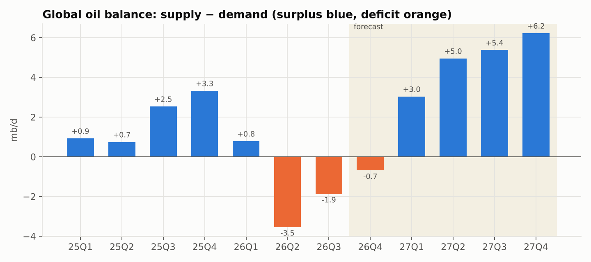
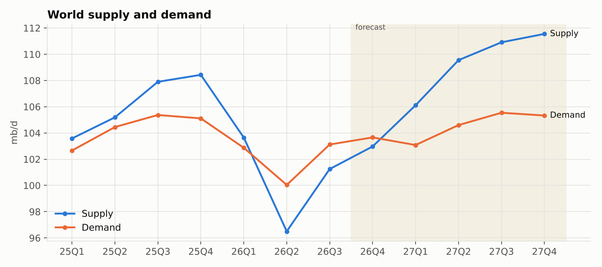
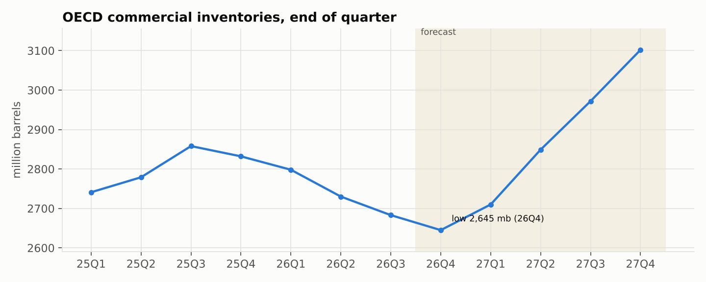
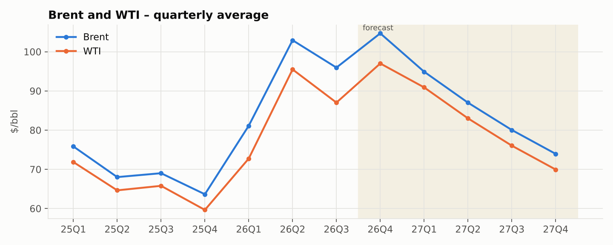
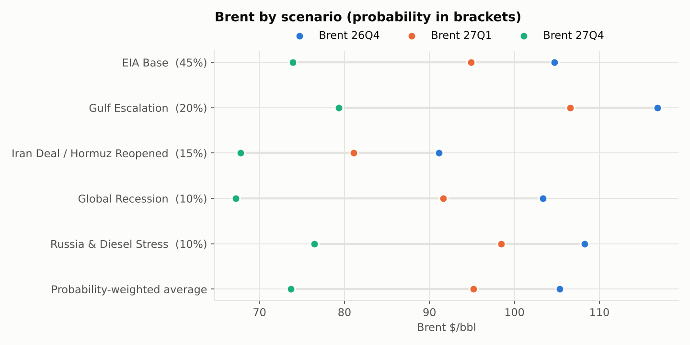
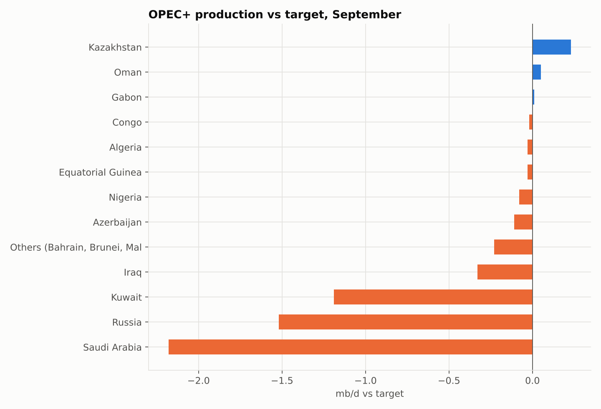
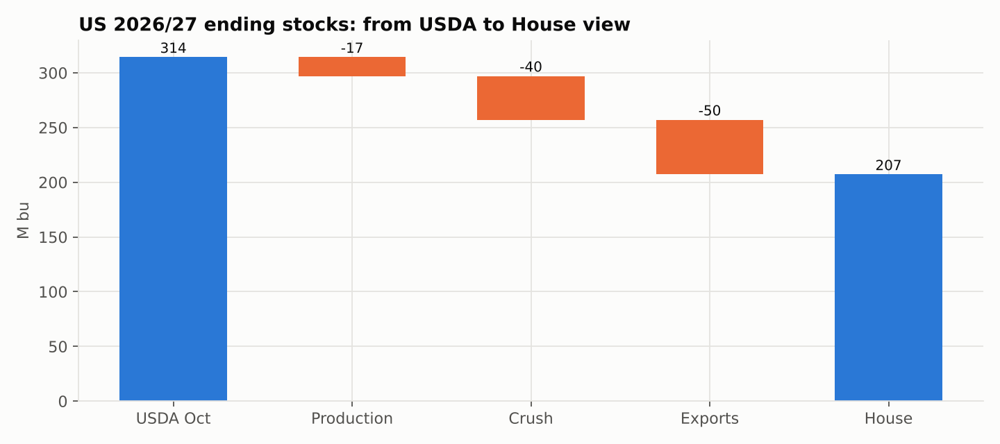
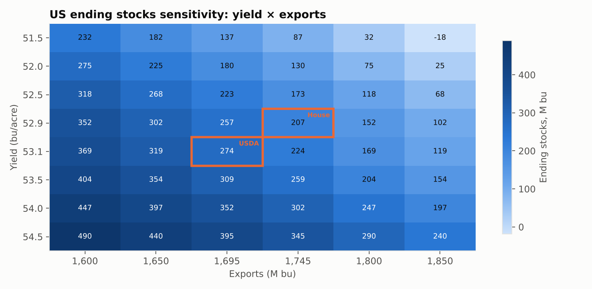
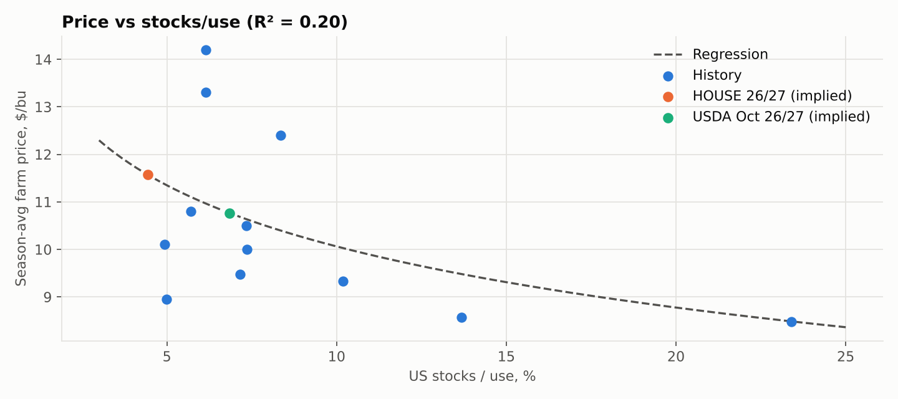
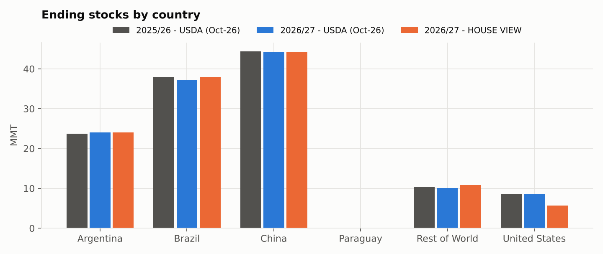

Supply & Demand Report
Generated 2026-10-20 09:54 UTC · commit a8df3e4 · automatic run from the workbooks in Fundamentals/
Crude oil – global balance
Updated October 14, 2026 · data: EIA Short-Term Energy Outlook October 2026 (tables 2 and 3a), IEA OMR October 2026
Key points
- Active scenario in the workbook: EIA Base. Forecast quarters start at 26Q4.
- The market is in deficit in 2026 (-1.33 mb/d) and swings to a surplus of +4.90 mb/d in 2027; the first forecast surplus quarter is 27Q1.
- OECD commercial stocks bottom at 2,645 mb in 26Q4, then rebuild to 3,102 mb by 27Q4 (+457 mb).
- Brent peaks at $104.7 in 26Q4 and falls to $73.9 by 27Q4 as inventories rebuild. WTI–Brent spread in 26Q4: $7.7.
- Scenarios put 26Q4 Brent between $91.1 (Iran Deal / Hormuz Reopened) and $116.8 (Gulf Escalation); the probability-weighted value is $105.3, +0.6 $/bbl vs the EIA base.
- Largest EIA–IEA gap: Supply 2027 (+1.15 mb/d).
- OPEC+: biggest m/m move is Saudi Arabia (+2.33 mb/d, 8.30 mb/d in Sep-26).
- Last US weekly crude report (2026-10-02): -3.19 mb vs +1.70 expected – Draw vs consensus → bullish.
What changed since the previous run
First run: nothing to compare yet.
Charts






Scenario comparison
| Scenario | Prob. | Net 26Q4 | Net 27Q1 | Net 27Q2 | Net 27Q3 | Net 27Q4 | Balance 26Q4 | Balance 27Q1 | Δ OECD stocks end-27 (mb) | Brent 26Q4 | WTI 26Q4 | Brent 27Q1 | WTI 27Q1 | Brent 27Q4 | WTI 27Q4 |
|---|---|---|---|---|---|---|---|---|---|---|---|---|---|---|---|
| EIA Base | 45.0% | 0.00 | 0.00 | 0.00 | 0.00 | 0.00 | -0.69 | 3.03 | 0.00 | 104.69 | 97.00 | 94.90 | 90.90 | 73.94 | 69.94 |
| Gulf Escalation | 20.0% | -1.10 | -0.80 | -0.60 | -0.30 | 0.00 | -1.79 | 2.23 | -80.11 | 116.83 | 109.14 | 106.56 | 102.56 | 79.33 | 75.33 |
| Iran Deal / Hormuz Reopened | 15.0% | 0.80 | 1.20 | 0.70 | 0.30 | 0.20 | 0.11 | 4.23 | 91.36 | 91.14 | 83.45 | 81.07 | 77.07 | 67.79 | 63.79 |
| Global Recession | 10.0% | 0.70 | 1.00 | 1.00 | 0.50 | 0.30 | 0.01 | 4.03 | 100.05 | 103.33 | 95.64 | 91.64 | 87.64 | 67.21 | 63.21 |
| Russia & Diesel Stress | 10.0% | -0.30 | -0.50 | -0.30 | -0.20 | 0.00 | -0.99 | 2.53 | -37.10 | 108.27 | 100.58 | 98.43 | 94.43 | 76.44 | 72.44 |
| Custom | 0.0% | 0.00 | 0.00 | 0.00 | 0.00 | 0.00 | -0.69 | 3.03 | 0.00 | 104.69 | 97.00 | 94.90 | 90.90 | 73.94 | 69.94 |
| Probability-weighted average | 100.0% | -6.0% | 7.0% | 5.5% | 1.5% | 6.0% | -75.0% | 3.10 | 3.98 | 105.31 | 97.62 | 95.18 | 91.18 | 73.67 | 69.67 |
Agency check
| Metric | EIA Oct-26 | IEA Oct-26 | Difference | OPEC Jul-26 | Note |
|---|---|---|---|---|---|
| Demand 2026 | 102.43 | 102.40 | 0.03 | 105.94 | OPEC uses a higher historical baseline; July figure |
| Demand 2027 | 104.64 | 104.40 | 0.24 | 107.86 | IEA: 102.4 + 2.0 recovery; OPEC July |
| Demand change 2026 | -1.97 | -2.60 | 0.63 | 0.78 | In July OPEC still saw growth |
| Supply 2026 | 101.09 | 100.70 | 0.39 | ||
| Supply 2027 | 109.55 | 108.40 | 1.15 | IEA: 100.7 + 7.7 | |
| Supply change 2026 | -5.20 | -5.80 | 0.60 | ||
| Balance 2026 (supply − demand) | -1.34 | -1.70 | 0.36 | Both see a 2026 deficit | |
| Balance 2027 | 4.91 | 4.00 | 0.91 | Both see a large 2027 surplus |
Catalysts
| When | Event | What to watch | Expected effect | Within 3 days of Oct 14 | Outcome (fill in) |
|---|---|---|---|---|---|
| Oct 14, 21:30–22:30 CET | API inventories (week to Oct 9) | Consensus +1.9 mb: a build would be bearish | Uncertain | Yes | |
| Oct 15, 18:00 CET | EIA inventories (week to Oct 9) | Draw risk from the Gulf of Mexico shut-ins | Up | Yes | |
| Ongoing | Houthi attacks on Saudi Arabia | Saudi response promised: gap risk | Up | Yes | |
| Ongoing | Tanker attacks in Hormuz | At a 7-month high | Up | Yes | |
| Ongoing | Gulf of Mexico production restart | Platforms restarting after Isaias | Down | Yes | |
| Ongoing | US–Iran talks via Qatar | A deal would deflate the geopolitical premium (~$20) | Down | Yes | |
| Ongoing | Russia–Ukraine energy truce | Fragile; Russian diesel volumes are small | Down | Yes | |
| Oct 17–18 | Weekend | News over the weekend: Monday gap risk | Uncertain | Yes | |
| Oct 21, 16:30 CET | EIA – first full week after the hurricane | Production recovery | Uncertain | No | |
| Nov 1 | OPEC+ meeting | No change expected before 2027 | Neutral | No | |
| Nov 10 | EIA Short-Term Energy Outlook | New price and inventory forecasts | Uncertain | No | |
| Nov 13 | IEA Oil Market Report | Updated global balance: refresh EIA_Data / Agency_Check | Uncertain | No |
Soybeans – US & world balance 2026/27
Global soybean supply & demand model | As of 13-Oct-2026 (post 9-Oct WASDE) | Units: US in million bushels, world in million metric tons
Key points
- House US 2026/27 carryout is 207 M bu vs USDA's 314 (-107), stocks/use 4.4% vs 6.9%.
- Differences vs USDA come from: yield -0.2, production -17.2, crush +40.0, exports +50.0.
- The S/U regression implies a farm price of $11.57/bu (House) vs $10.76 (USDA balance), +0.81 $/bu. R² is 0.20: use the change, not the level.
- World ending stocks 122.7 MMT (House) vs 124.3 (USDA), -1.57 MMT; exporter stocks/use 18.3%.
- Board crush margin $2.47/bu (above the $2 'run at capacity' level); oil is 50% of product value.
- Nov-26 / Jan-27: 17.0c carry = 81% of full carry (neutral).
- Jan-27 / Mar-27: 10.0c carry = 49% of full carry (tight).
- Sensitivity: 1 bu/acre of yield ≈ 86 M bu of ending stocks.
House view (from the workbook)
Market prices US 2026/27 off USDA's 315 mb carryout; we see ~200-210 mb (S/U ~4.5%).
Drivers: (1) board crush margin >$2/bu keeps plants at capacity -> crush +40 mb; (2) China buying ahead of USDA pace -> exports +50 mb;
(3) yield 52.9 bpa (trend 53.5 less condition adj.) vs USDA 53.1. Supply story is priced; demand is under-priced.
Market signal to watch: the Nov/Jan spread vs full carry (narrowing carry = nearby tightness) - see Spreads tab.
Risks: yield >54 bpa (StoneX), China tariff persists / CASDE 95.5 MMT imports, meal glut compressing crush margins, record Brazil crop from Jan.
What changed since the previous run
First run: nothing to compare yet.
Charts




US balance sheet (M bu)
| Item | Unit | 2024/25 | 2025/26 Est | 2026/27 USDA Sep | 2026/27 USDA Oct | 2026/27 HOUSE | House - USDA Oct |
|---|---|---|---|---|---|---|---|
| Area planted | M acres | 87.30 | 81.20 | 86.90 | 86.90 | 86.90 | 0.00 |
| Area harvested | M acres | 86.20 | 80.40 | 85.90 | 85.90 | 85.90 | 0.00 |
| Yield | bu/acre | 50.70 | 53.00 | 52.80 | 53.10 | 52.90 | -0.20 |
| Beginning stocks | M bu | 342 | 325 | 325 | 315 | 315 | 0.00 |
| Production | M bu | 4,374 | 4,261 | 4,535.52 | 4,561.29 | 4,544.11 | -17.18 |
| Imports | M bu | 30.00 | 22.00 | 25.00 | 25.00 | 25.00 | 0.00 |
| TOTAL SUPPLY | M bu | 4,746 | 4,608 | 4,885.52 | 4,901.29 | 4,884.11 | -17.18 |
| Crush | M bu | 2,445 | 2,646 | 2,780 | 2,780 | 2,820 | 40.00 |
| Exports | M bu | 1,892 | 1,515 | 1,685 | 1,695 | 1,745 | 50.00 |
| Seed | M bu | 70.00 | 75.00 | 73.00 | 73.00 | 73.00 | 0.00 |
| Residual | M bu | 14.00 | 57.00 | 38.00 | 39.00 | 39.00 | 0.00 |
| TOTAL USE | M bu | 4,421 | 4,293 | 4,576 | 4,587 | 4,677 | 90.00 |
| ENDING STOCKS | M bu | 325 | 315 | 309.52 | 314.29 | 207.11 | -107.18 |
| Stocks / use | % | 7.4% | 7.3% | 6.8% | 6.9% | 4.4% | -2.4% |
| Avg farm price (USDA) | $/bu | 10.00 | 10.50 | 12.00 | 12.00 | 11.57 |
World key metrics
| Metric | 2025/26 USDA | 2026/27 USDA | 2026/27 HOUSE | House - USDA |
|---|---|---|---|---|
| World ending stocks (MMT) | 124.93 | 124.28 | 122.70 | -1.57 |
| World stocks / use | 20.2% | 19.6% | 19.3% | -0.3% |
| World ex-China ending stocks (MMT) | 80.57 | 80.02 | 78.44 | -1.57 |
| World ex-China stocks / use | 16.6% | 16.1% | 15.7% | -0.4% |
| Major exporters stocks: US+BR+AR (MMT) | 70.13 | 69.92 | 67.67 | -2.25 |
| Exporter stocks / exporter use (US+BR+AR) | 0.20 | 0.19 | 0.18 | -0.01 |
| US share of world exports | 22.1% | 24.0% | 24.6% | 0.6% |
| Brazil share of world exports | 61.4% | 61.5% | 60.9% | -0.6% |
| China share of world imports | 59.9% | 60.3% | 60.1% | -0.2% |
| Trade gap: world exports - imports (MMT) | -2.10 | 1.17 | 1.17 | -0.00 |
Calendar spreads
| Spread | Front (c/bu) | Back (c/bu) | Spread back-front (c) | Days | Storage (c) | Financing (c) | Full carry (c) | % of full carry |
|---|---|---|---|---|---|---|---|---|
| Nov-26 / Jan-27 | 1,303 | 1,320 | 17.00 | 61.00 | 10.06 | 10.89 | 20.95 | 81.1% |
| Jan-27 / Mar-27 | 1,320 | 1,330 | 10.00 | 59.00 | 9.73 | 10.67 | 20.40 | 49.0% |